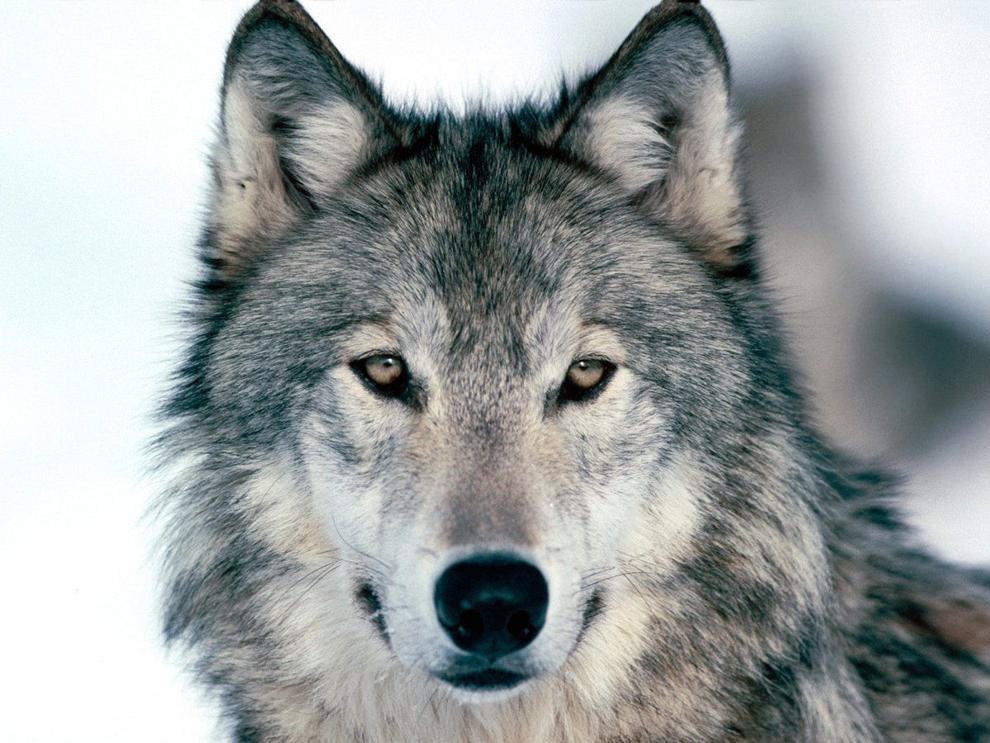

Other Information about me
About me
Hi, I'm Kevin David Arthur, and I was born on October 18, 1996, I'm 25 years old, I'm from Ghana.
I'm is kind and peaceful and looks to be thoughtful, responsible, dependable, helpful, compassionate, and aggressive. my speech handicap, and hence his low self-esteem, is a big disadvantage. my appearance is highly important to him, and I care about what others think of me. A psychological examination revealed that I have internalized self-stigma stereotypes,
with the behavioral implications of social avoidance. I'm also prone to mental health issues, according to the examination.I'm trustworthy and punctual in whatever he does. I'm calm and can work on my own with a little bit of assistance. He enjoys trying things. I'm innovative in coming up with new ideas; I have strong IT skills, critical thinking abilities, and organizational/domestic skills. mine indicated my interests.! I was the best in my class in terms of showing up to class on time, being well-behaved, getting excellent grades on classwork and examinations, and having a pleasant demeanor at school.
I approach whatever I do in school and life with a cheerful attitude. After graduating from college with an associate degree in computer science and an excellent grade, I intend to transfer to the University of California or California State University to pursue a bachelor's degree in computer science or to do my OPTs, but first I'd like to work for a good tech firm for two or three years to get a good sense of what makes a good tech firm. Following that, I aim to launch my technological firm. I'd be able to work on side projects, better my English, and design or create a website or system to protect people from fraudsters, catfishers, fraud, and other cyber concerns that the world is struggling with today. In addition, I'd like to construct a real-life I enjoy playing video games, watching TV shows and movies, and cooking (Fun fact: I am a fantastic cook!). I used to cook for others and myself at school,
and I used to go to restaurants to bake pizza for school occasions). I'm a laid-back individual. In Ghana, I work as an intern for a firm that creates mobile apps and websites. I am fascinated with computer science! I always received the greatest grade in my class because I loved learning HTML, making websites using programming languages, and publishing on my computer abilities. I'm studying flutter, a new programming language for a mobile app. I also enjoy learning about robots. With my passion for both mobile applications and robotics, I want to one day be able to develop Tony Stark's Iron Man and invest in some pretty fantastic robots.II have a speech problem, but it does not limit my talents.I'm is kind and peaceful and looks to be thoughtful, responsible, dependable, helpful, compassionate, and aggressive. my speech handicap, and hence his low self-esteem, is a big disadvantage. my appearance is highly important to him, and I care about what others think of me.
A psychological examination revealed that I have internalized self-stigma stereotypes, with the behavioral implications of social avoidance. I'm also prone to mental health issues, according to the examination.I'm trustworthy and punctual in whateven I'm passionate about. I'm calm and can work on my own with a little bit of assistance.n things. I'm innovative in coming up with new ideas; I have strong IT skills, critical thinking abilities,= and.organizational/domestic skills. mine indicated my interests.!
My favorite animal is worlf
I love cats and grey wolf but my favorite animals is a grey wolf because I always wanted one day in the future to buy a grey wolf and I know it is a best choice own a grey wolf but I do not if someone can own wolf as a pet in the world but if not I will be the first person to own a wolf in the right ways .Fun fact about are The wolf is the biggest member of the canine family. In North America, the Grey Wolf is known as the Timber Wolf,
family. In North America, the Grey Wolf is known as the Timber Wolf, the White Wolf, or simply as the Common Wolf. Wolves are famous for their spine-chilling howl, which they use to communicate.
A lone wolf howls to attract the attention of his group, although collective howls can be used to communicate territorial messages from one pack to another. Some cries are combative. Rival packs. The reason like wolf are the always loyal to the own and always.